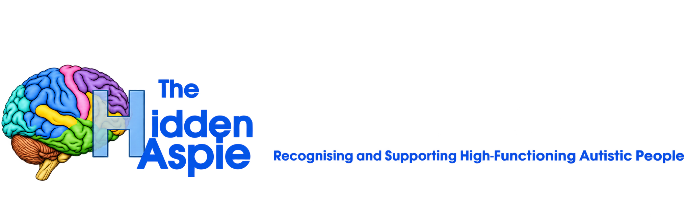

© 2012 The Hidden Aspie | Content - Valerie Carlin | Design & Website - Jan Szafranski | Site Contents
Share this page
posted 24 May 2012, 12:19 by Jan Szafranski [ updated 24 May 2012, 12:19]
Lead character in 'The Bridge' is a Hidden Aspie
'The Bridge' is a Scandinavian crime drama television series, co-produced by Danmarks Radio and Sveriges Television. The series follows a police investigation, led by Saga Noren (Sofia Helin) following the discovery of a dead body on the bridge connecting Denmark and Sweden. What marks the series as different is that Saga has High Functioning Asperger's, and although good at her job, experiences difficulties in relationships and conventions. "Saga is so strange. I am completely her opposite. I could feel my brain changing as I played her", says the actress. In fact, Helin admits she found Saga's lack of social conditioning so confusing that at first she did not know how to play her, or even whether she wanted to, "I was very uncertain at the beginning because … Saga is so strange. And I am so completely her opposite. I'm almost completely ruled by my emotions," she continues. "My brain moves in circles, but Saga thinks squarely – I could almost feel my brain changing as I played her."